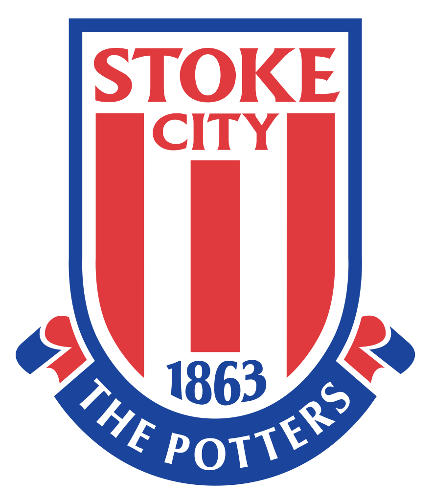
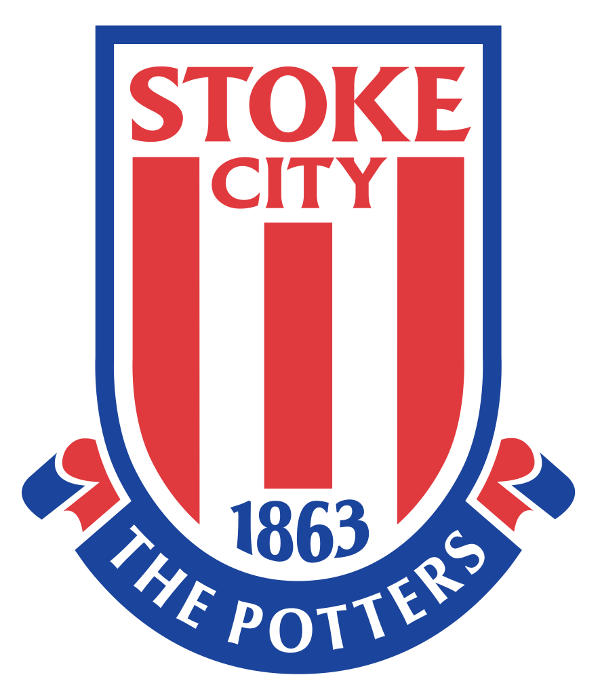
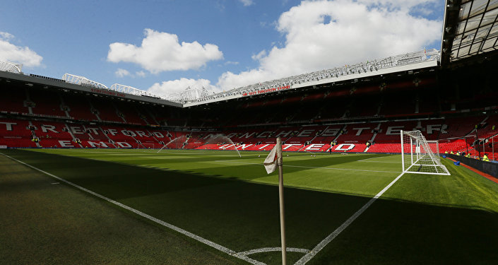
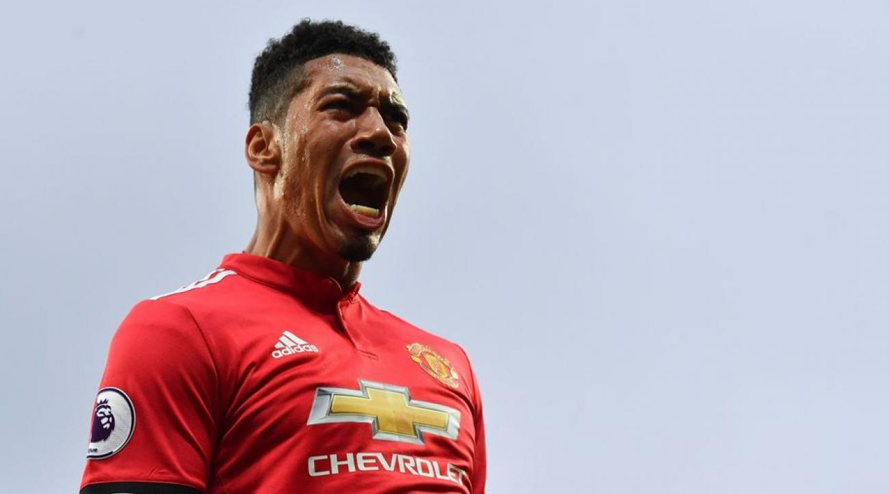

What the media are saying...
Live
Mon Jan 15 | Old Trafford
Premier League
 V

V

MUFC vs Stoke City

Man Utd v Derby
Ticket News
There are still tickets left for our FA Cup tie against Derby.

Vote for goal of the month
Poll
There are eight contenders in the running for Manchester United's final Goal of the Month poll for 2017.